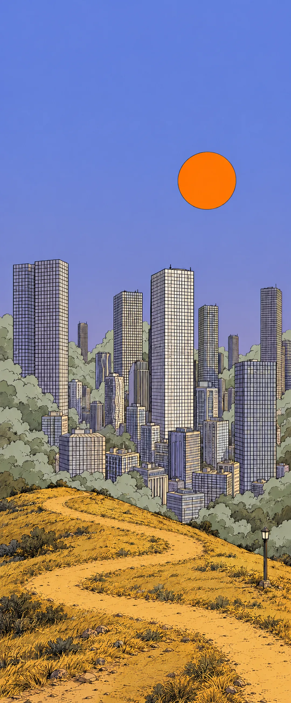
e.remove());document.getElementById('cityB-fb').style.display='none';document.getElementById('scrB').classList.remove('intro')">e.remove());document.getElementById('cityB-fb').style.display='none';document.getElementById('scrB').classList.remove('intro')">e.remove());document.getElementById('cityB-fb').style.display='none';document.getElementById('scrB').classList.remove('intro')">未注册的手机号验证后自动注册。
登录即表示同意《用户协议》《隐私政策》。只服务 18 岁以上用户。
用微信登录 ›Soulink 申请获取你的微信头像和昵称，用来创建账号；之后都能改。
登录即表示同意《用户协议》《隐私政策》。只服务 18 岁以上用户。
用手机号登录 ›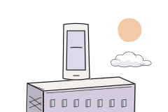
四项授权，随时可关。
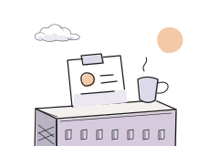
对着镜头转头，确认是本人。验证视频几秒后删除。
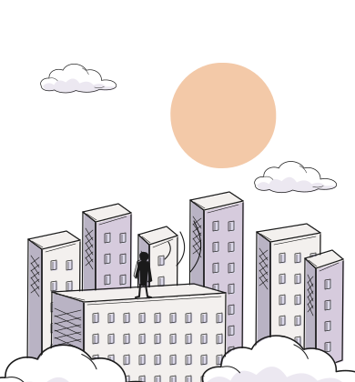
聊两三分钟，灵犀记下你在意的事。每条都能改、能删。
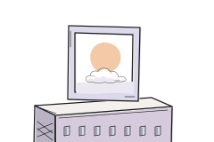
结果进画像作参考，不单独决定推荐。也可稍后在「测一测」里补。
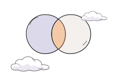
照片用于展示资料；第 2 步同意后，也用于理想型推荐。双方都点才互相看清其他照片。
正脸、全身、做喜欢的事，各一张。
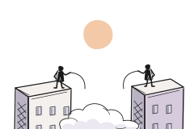
根据刚才的对话整理，不准确的可删。AI 生成 · 仅供参考。
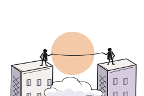
传一张理想型照片，灵犀按照片从每天 20 位里找像的人，推荐给你。不存人脸。
清冷 · 短发 · 冷色衣着 · 安静的气质
说说喜欢什么、介意什么，灵犀会记住并调整推荐顺序。
年龄设为 24–32，你喜欢的三位中两位在 33 以上。上限要改为 35 吗？
产品设计 · 朝阳 · 约 2 公里 · 想找认真交往的人
AI 生成 · 仅供参考，不单独决定推荐。
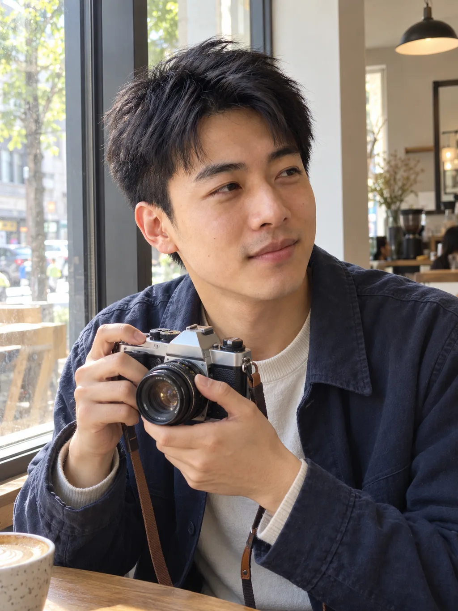
林问了你两个问题，陈的消息三天未回。想结束对话，灵犀可以拟一句，由你发送。
灵犀拟整句，填进输入框，改好后自己发。AI 生成 · 仅供参考。
三天未回复。想结束对话，灵犀可以拟一句，由你发送。
第一次见面，可选安静、好找、能坐一小时的地方。
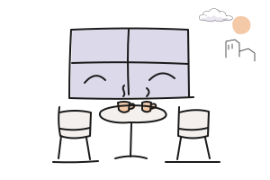
灵犀精选朝阳门 · 咖啡 · 约 1.5 公里
靠窗下午有太阳，店里不放音乐，适合安静聊天。
评论提到店里安静，周末靠窗位紧张。AI 生成 · 仅供参考。
工作日下午人少，不用订位。门口不好找，在胡同第二个口进去。
评论和照片审核后可见，不能私信。想认识人，去「今天」。
它该怎么跟你说话？
「你们都提过周末想看展，所以推荐 Ta。」
创业第 23 天，白天忙工作，晚上想安静聊聊。有空一起喝咖啡。
把「喜欢热闹」从标签里划掉了。更想和一两个人慢慢聊。
一张正脸、一张全身、一张你在做喜欢的事。
北京 · 朝阳 · 想找认真交往的人 · 已验证 ✓
写好三条回答，灵犀会据此向对方说明推荐理由。
结果进画像作参考，不单独决定推荐。也可生成卡片分享。
回答显示，你倾向于尊重对方的选择。
回答显示，你倾向于说清想法，也给对方空间。
林刚问了你一个问题，可以先回这一句。
默契和羁绊得分较高，激情中等，仅作参考。分数参考星座 × 属相五行 × MBTI × 恋爱风格四项，进画像作参考，不单独决定推荐。
回答显示，你更习惯等对方开口。
爱问问题，先问了你一个。
你们都提过喜欢安静，是否相处舒服还要聊聊看。
你回答具体，Ta 提过「喜欢把事情说清楚的人」。
都提过「不急」，今天的 20 位里有 3 对提到这一点。
第一次见面可选安静、好找、能坐一小时的地方。从共同聊过的展览开始。
AI 生成 · 仅供参考，不单独决定推荐。对话建议参考双方回答，不代表 Ta 的真实想法。
灵犀根据对话、推荐反馈和回访整理，删掉的不再用于推荐。AI 生成 · 仅供参考。
传一张理想型照片，灵犀按照片从每天 20 位里找像的人，推荐给你。不存人脸。
照片里是短发、冷色衣着。性格还要通过资料和相处了解。
你提过周末想安静，也划过「审美」三次。灵犀会参考这些偏好。
这四个特点描述照片外观。是否聊得来，要看你们的对话。
先看推荐理由，再决定要不要认识。
在「今天」选「理想型」看推荐。不存人脸。
可以聊推荐或对话。「灵犀记得」有 12 条，只给你看。
说说你最近在意的事。
删除的记忆不再用于推荐，已发出的理由不撤回。记忆与沐仞企业业务分开存放。
林问了你两个问题，陈的消息三天未回。今天没有新回访。
和吴见面后，你选了「不太合适」，原因是「太热闹」。已记入画像，供推荐参考。
你划掉了「喜欢热闹的场合」，已减少相关推荐。
免费版每天 20 位、帮聊和通话不限。会员加两件事。
自动续费，可在「我 › 设置 › 会员」随时取消；每次扣费前 5 天提醒。开通即同意《会员服务协议》《自动续费规则》。价格以支付页为准。
林也喜欢你。可以在「消息」里打招呼了。
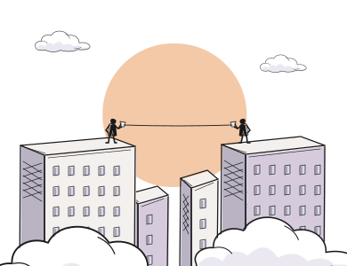
通话会被实时安全审核；遇到不舒服的话随时挂断并举报。
来自今天 28 · 来自广场 9
其中 3 位像你的理想型，明天优先推荐。喜欢你的人会出现在「今天」。
仅自己可见，不展示访客名单。
同学注册成功后，你们马上各多看 5 位。清华目前 989 人注册。
每人最多邀请 10 位，不需要校园邮箱。
企业微信群，给清华的同学：群里发活动、去处和每周一个话题。验证过校园邮箱的同学会标「同校」，不验证也能加。
沐仞科技（FathomPeak）是一站式大模型 API 平台，和 Soulink 合作。做课程项目、比赛或自己的 AI 应用，可以直接用。
跳转沐仞官网，需单独注册；Soulink 不会把你的资料、聊天或理想型发给沐仞。
24 小时内处理；Ta 不会知道是谁举报的。
选一个去处，附在内容里。
审核后在「去处」展示，灵犀会参考评论推荐。
按出生年份查看属相与五行，仅供参考。结果进入画像，不单独决定推荐。
验证在读或校友身份，不公开学号和邮箱。也可用学信网授权。
Ta 填生日和 MBTI 后，双方可看结果。Ta 的资料不用于推荐。
参考星座、属相五行、MBTI 三项。仅供参考，不单独决定推荐。
纯文本加图片，24 小时内到；链接 7 天有效。
会员增加提前看推荐和约见面安排，帮聊、通话、回访可免费使用。自动续费可随时取消，扣费前 5 天提醒。
选择工具，灵犀按相关记录回答并说明依据。
内容仅自己可见。灵犀记下的每条都能改、能删。
可选原因，供下次推荐参考。
不想继续，灵犀可拟一句，由你发送。也可记录这家咖啡馆的体验。